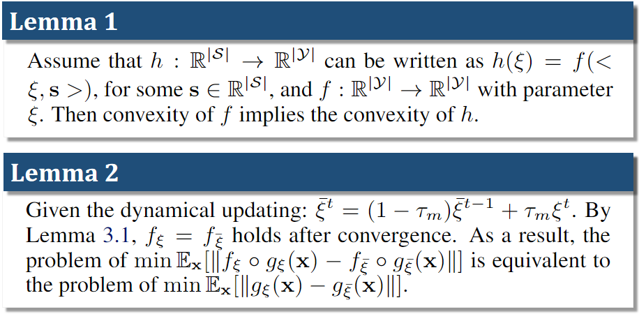
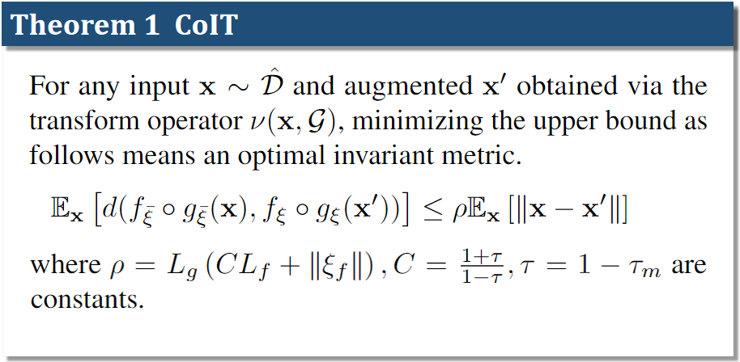

Data-efficiency has always been an essential issue in pixel-based reinforcement learning (RL). As the agent not only learns decision-making but also meaningful representations from images. The line of reinforcement learning with data augmentation shows significant improvements in sample-efficiency. However, it is challenging to guarantee the optimality invariant transformation, that is, the augmented data are readily recognized as a completely different state by the agent. In the end, we propose a contrastive invariant transformation (CoIT), a simple yet promising learnable data augmentation combined with standard model-free algorithms to improve sample-efficiency. Concretely, the differentiable CoIT leverages original samples with augmented samples and hastens the state encoder for a contrastive invariant embedding. We evaluate our approach on DeepMind Control Suite and Atari100K. Empirical results verify advances using CoIT, enabling it to outperform the new state-of-the-art on various tasks. Source code is available at https://github.com/mooricAnna/CoIT.
Our method, CoIT introduces a learnable image augmentation to achieve an invariant image transformation. We propose a theoretical analysis of how a learnable invariant image transformation can approximate a stationary distribution over the transformed data by the optimal invariant metric, thus learning better representations.
 To further stabilize the reward function, we propose a mixed CoIT that samples multiple transformed data from the learned distribution, and mix up them together for model training.
We present a new framework with normalization variants to ensure above discussed learning guarantees by optimizing paraneters. Below are key points of our method.
Eventually, we give the unified objective function as the full version of the CoIT,
where \(\alpha \) and \(\lambda\) are hyper-parameters and the overall architecture is presented below.
Overall architecture of CoIT. The observations are transformed following a Gaussian distribution \(\mathcal{G}(\mu, \sigma)\) and encoded by the state encoder \(g_\xi\). The observation encoder \(g_{\bar{\xi}}\) and projection \(f_{\bar{\xi}}\) are the exponentially moving average version of the state encoder and projection.
We benchmark our method on the DeepMind control suite and compare CoIT with prior model-free methods which use data augmentation and contrastive learning to improve data-efficiency:
We also present ablation studies to show the details of our method.
A novel pixel transformation CoIT under model-free RL algorithms that significantly improves the data-efficiency and stability for visual tasks is introduced in this work. We theoretically analyze how the learnable transformation constrains the distribution of the abstracted data, and dissect its benefits to representation learning. CoIT is no need for any additional modifications to the backbone RL algorithm and is easy to implement. We compare CoIT to SOTA methods on popular benchmarks and certify that it gains promising performance with advanced stability. Hopefully, contrastive invariant transformation can lead to a new branch for representation learning in RL.
@inproceedings{liudata,
title={On the Data-Efficiency with Contrastive Image Transformation in Reinforcement Learning},
author={Liu, Sicong and Zhang, Xi Sheryl and Li, Yushuo and Zhang, Yifan and Cheng, Jian},
booktitle={The Eleventh International Conference on Learning Representations}
}